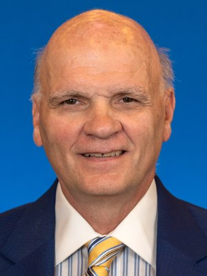
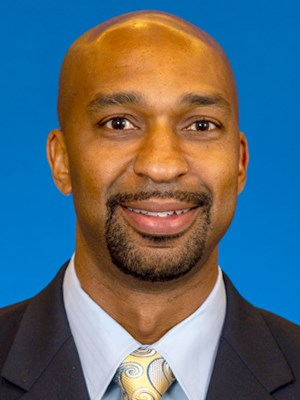
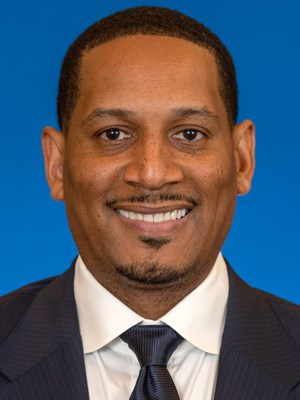

Michigan Basketball
Staff
ㅤ
Juwan Howard
Head Coach
Former University of Michigan men's basketball All-American Juwan Howard will begin
his third season as the David and Meredith Kaplan Men’s Basketball Head Coach with
the Wolverines.In just two seasons with his alma mater, Howard has mixed strong culture
principles with a passion for competing as his Wolverines continued to showcase themselves
in the Big Ten, nationally and rewrite history along the way.
ㅤ
ㅤ
Phil Martelli
Associate Head Coach
With 45 years of collegiate coaching experience, legendary coach Phil Martelli
serves as the associate head coach with the University of Michigan basketball program
following a 34-year tenure at Saint Joseph's University in Philadelphia. Joining Juwan
Howard's staff in 2019, Martelli's influences can be felt throughout the program as the
Wolverines have compiled a 42-17 record, won the 2019 Battle 4 Atlantis -- including wins
over No. 6 North Carolina and No. 8 Gonzaga and claimed the 2021 Big Ten regular season title
in 2021 -- the 15th in program history.
ㅤ
ㅤ
Saddi WashingtonAssistant Coach
With nearly two decades of college coaching experience, Saddi Washington begins his sixth season with the University of Michigan men's basketball program. In his five seasons with the Wolverines, Washington was responsible for working with U-M's big men early on in his tenure before shifting to coordinate the Wolverines defensive strategies. Overall, with Washington the Maize and Blue has compiled 131 victories (26.2 per season) including a program record 33 wins in 2017-18 (33-8) and followed that with a second straight 30-win season in 2018-19 (30-7).
ㅤ
ㅤ
Howard Eisley
Assistant Coach
Following a successful nine years working and coaching in the NBA, Howard Eisley returned to his native state
of Michigan and assistant coach with the University of Michigan basketball program. Joining Juwan Howard's staff
in 2019, was instrumental in working with the Maize and Blue guards and offensive sets. With his efforts the Wolverines
have compiled a 42-17 record, won the 2019 Battle 4 Atlantis -- including wins over No. 6 North Carolina and No. 8 Gonzaga
and claimed the 2021 Big Ten regular season title in 2021 -- the 15th in program history.
ㅤ
ㅤ